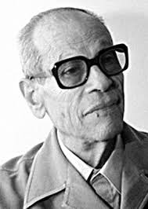

Naguib Mahfouz was an Egyptian novelist and screenplay writer, who was awarded the Nobel Prize for Literature in 1988, the first Arabic writer to be so honoured. Mahfouz was the son of a civil servant and grew up in Cairo's Al-Jamāliyyah district.
Naguib Mahfouz's writing continues to influence generations of readers, both in the Arab world and beyond. His exploration of the human spirit, societal change, and political struggles left an indelible mark on modern literature. His works are taught in universities, adapted into films, and remain a testament to the power of storytelling in shaping society.